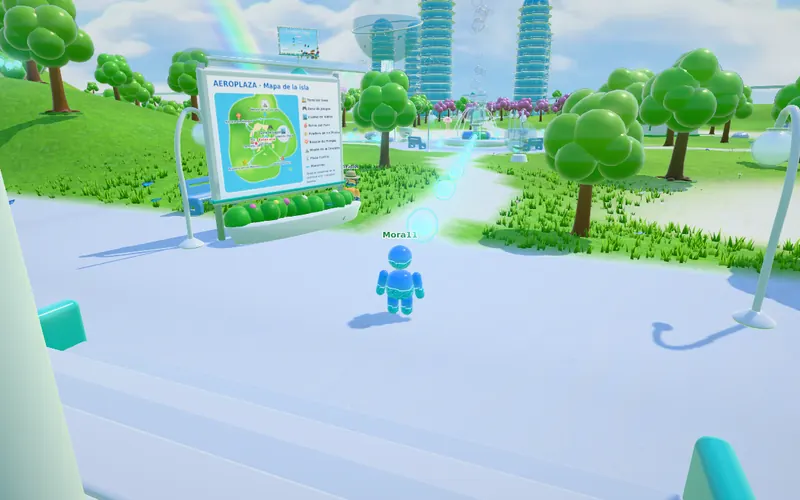

Juegos que se sienten grandes.
Hago juegos para el navegador y el celu: física de verdad, arte propio y un estilo distinto en cada uno. Todos en español, inglés y portugués.
Hago los juegos que me gustaría jugar.
Soy JXStudios. Cada juego arranca de una idea chica y se lleva hasta que se ve y se juega como uno grande: plataformas de precisión, un diorama de papel, un auto con suspensión de verdad o una isla 3D para jugar con amigos.
Muchos cuentan historias argentinas: el viento Zonda, la Luz Mala, el cóndor de la puna, la Ruta 40. Todos se abren con un toque, sin instalar nada, y se juegan con teclado o con el dedo.

Un mundo 3D para jugar con otros: una isla llena de zonas, reinos para viajar y una casa propia para armar.
- Multijugador en salas, con chat y voz de cerca
- VR con el celu en un visor, y tus manos para apuntar y agarrar
- Parkour, un runner, tiro y edificios para entrar
- En español, inglés y portugués
Android 8 o más nuevo. Como no viene de Play Store, al instalar el celu te pide permiso para instalar apps de otras fuentes.
Para jugar en el navegador
Cada uno con su estilo, sus menús y su música. Se abren acá mismo, en la compu o en el celu.